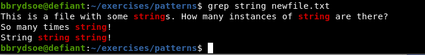

Finding patterns¶
This section will look at finding patterns (grep, find, wild cards, and regular expressions).
Learning objectives
Questions
- How do I find out if a specific pattern is in a file?
- What are regular expressions?
Objectives
- Learn about finding patterns
- Learn to use
grepandfind - Learn to use wild cards
- Learn to use regular expressions
Here you will find descptions on how to search for files with specific patterns.
Code along!
Try out / code along for some of these examples.
You can use the contents of the directory /exercises/patterns that you got from the downloaded tarball (exercises.tar.gz) to play with. If you have not done so already, right-click and save to download, or right-click and copy the url, then do wget THE-URL-YOU-COPIED in a terminal window to download it there. Then do tar -zxvf patterns.tar.gz to unpack.
grep¶
This command searches for patterns in text files.
Syntax:
FILE is the name of whatever file you want to look at.
Some commonly used options are:
- -i: ignore case
- -o: only output the instance of the pattern you search for, not the full line
- -e: use a regular expression as pattern for what you search for
- -c: do not output the line, just print a count of matching lines
- -n: Prefix each line of output with the 1-based line number within its input file.
- -r: Read all files under each directory, recursively. If no file operand is given, grep searches the working directory.
See man grep for more options.
Examples
Code along
A good file to use here is fil.txt in the exercises/patterns directory. You will also use newfile.txt and fil.txt in the same directory.
Try finding the pattern string in newfile.txt
This file is also located in the exercises/patterns directory.
Click to reveal solution

Find the instances of the word ‘string’ in file.txt and count them
Find the lines with instances of ‘string’ in file.txt and output them to file.out
Find the lines with instances of ‘string’ in file.txt and append them to file.out
find¶
The find command is used for file and directory search. You can search by name, size, modification time, or content.
Syntax
- path is the starting directory for the search
- options are settings or conditions for the search
- expression is the criteria for filtering and locating files (for instance, only search
txt```files or only files nameddocs``).
Useful common options
- -type f: only search for files
- -type d: only search for directories
- -name NAME: only search for files with a specific name NAME or pattern
- -size [+/-]n: Searches for files based on size.
+nfinds larger files,-nfinds smaller files. ‘n‘ measures size in characters. - -mtime n: Finds files based on modification time.
nrepresents the number of days ago. - -exec command {} \;: Executes a command on each file found.
For more options, check man find
Examples
Try yourself
You could do the searches inside exercises directory or inside exercises/patterns directory.
- Find the file
myfile.txtin the directory you are standing in and below:
- Find the files
myfile.txtas part of the name in the directoryexpressions/patternswhile standing inexercises/script
Enhancing the power of grep and find¶
Wild cards¶
Wild cards are metacharacters or placeholders (Wikipedia: Wildcard) used to match one or more characters or numbers. In Linux shells, one can use them when finding patterns or when removing/listing all files of a certain type. Due to their convenience, wild cards are commonly used in programming languages, though their symbols may vary between languages. Here is a list of wild cards in Linux:
Common Linux wildcards
- ? represents a single character
- * represents a string of characters (0 or more)
- [ ] represents a range
- { } the terms are separated by commas and each term must be a wildcard or exact name
- [!] matches any character that is NOT listed between the [ and ]. This is a logical NOT.
- \ specifies an “escape” character, when using a subsequent special character.
Warning
You may need quotation marks as well around some wildcards.
Try some of the commands below
Useful files for these examples are found in exercises/patterns
Some examples of use of wildcards
This matches myfile0.txt, myfile1.txt,… for all letters between a-z and numbers between 0-9. Try with ls myfile?.txt.
This matches red, rad, ronald, … anything starting with r and ending with d, including rd.
This matches rack, rick, rock.
This matches ada, afa, aja, … and any three letter word that starts with an a and ends with an a and has any character d to j in between. Try with ls a[d-j]a.
This matches a range of numbers from 0 to 9.
This specifies to copy any files ending in .dat, .c, and .pdf to the user’s homedirectory. No spaces are allowed between the commas, etc. You could test it by creating a matched file in patterns directory with touch file.c and running the above command to see it only copies that one from the patterns directory.
This will remove all files named thisfile*, except those that has an 8 at that position in it’s name. Try running it in the patterns directory! Do ls before and after to see the change. Remember, you can always recreate the directory patterns by untar’ing it again.
Find all files with extension .txt in the directory you are standing in and below:
Find all files with file as part of the name in the directory expressions/patterns while standing in exercises/script
Regular Expressions¶
Regular Expressions are a type of patterns that are used when you are working with text.
Regular Expressions can be used with commands like grep, find and many others.
Note
If your regular expressions does not do as you expect, you may need to use single quotation marks around the sentence and you may also have to use backslashes on every single special character.
Some common examples of regular expressions:
- . matches any single character. Same as ? in standard wildcard expressions.
- \ is used as an “escape” character for a subsequent special character.
- .* is used to match any string, equivalent to * in standard wildcards.
- * the proceeding item is matched zero or more times. ie. n* will match n, nn, nnnn, nnnnnnn but not na or any other character.
- ^ means “the beginning of the line”. So “^a” means find a line starting with an “a”.
- $ means “the end of the line”. So “a$” means find a line ending with an “a”.
- [ ] specifies a range. Same as for normal wildcards. This is an ‘or’ relationship (you only need one to match).
- | This wildcard makes a logical OR relationship between wildcards. You can thus search something or something else. You may need to add a ‘' before this command to avoid the shell thinking you want a pipe.
- [^] This is the equivalent of [!] in standard wildcards, i.e. it is a logical “not” and will match anything not listed within the square brackets.
Example
This command searches the file myfile for lines starting with an “s” and ending with an “n”, and prints them to the standard output.
Keypoints
- Finding files with specific patterns in their names or content can be done with
grepandfind - Wildcards are p for one or more character or number and are useful for when you are finding patterns or removing/copying/listing all files of a certain type
- Regular Expressions are a type of patterns that are used when you are working with text. They can be used with
grep,find, and many many others